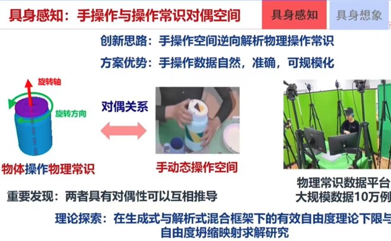
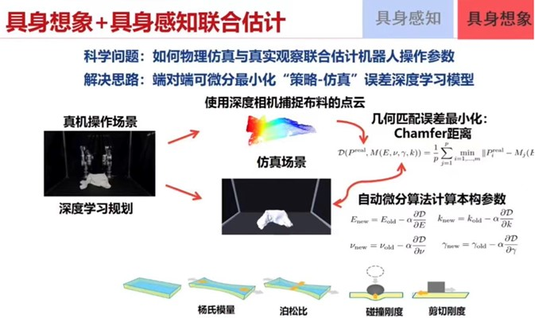
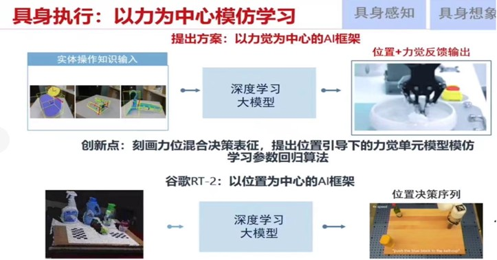
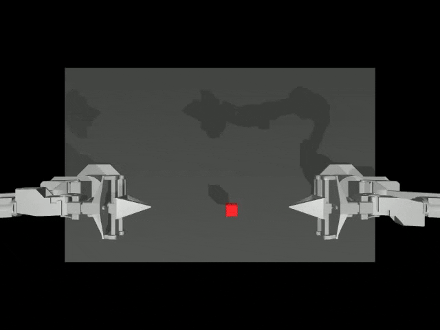
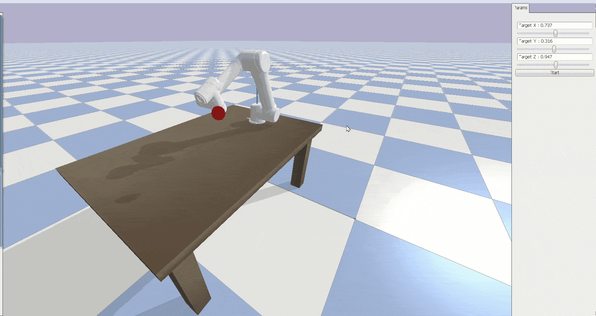
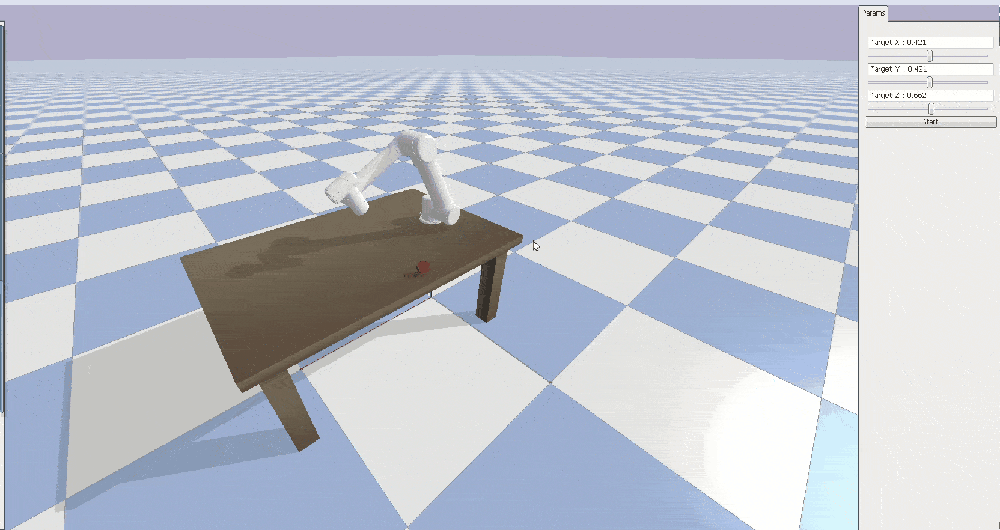

具身智能
本实验室聚焦机器人具身智能领域，以视觉语言行动（Vision-Language-Action, VLA）作为核心研究切入点。研究旨在深度挖掘 VLA 在融合视觉感知、语言理解与行动规划方面的潜力，通过构建先进的算法模型与系统架构，让机器人能够敏锐捕捉并准确解析复杂多变的环境视觉信息，精准理解自然语言表述的任务指令，并将这些信息高效转化为合理、连贯且适应性强的具身行动。
团队运用跨学科研究方法，整合计算机视觉、自然语言处理、机器人学等多领域知识，致力于攻克机器人在复杂场景下具身智能实现的关键技术难题，力求在该领域产出创新性理论成果与突破性技术方案，为推动机器人具身智能技术的广泛应用与发展奠定坚实基础。
具体研究方向
- 具身智能中Vision研究:
- 具身智能中Language研究:
- 具身智能中Action研究:
着重探索机器人如何通过先进的视觉感知技术，如高分辨率摄像头、深度传感器等，精准识别复杂环境中的物体、场景结构与动态变化。 深入研究视觉特征提取与理解算法，使机器人能从视觉信息中快速提取关键元素，构建环境语义地图，为后续行动提供准确的空间认知基础，增强机器人在各类场景下的自主感知与定位能力。
聚焦于提升机器人对自然语言的理解与生成能力。开发高效的自然语言处理模型，让机器人能够准确解析人类多样化的语言指令，理解其中蕴含的任务目标、约束条件与期望结果。 同时，研究如何使机器人以自然、易懂的语言与人类进行交互，汇报任务进展与执行情况，实现人机之间流畅、有效的沟通协作。
主要致力于优化机器人的行动规划与控制策略。依据视觉感知的环境信息与语言理解的任务指令，研究如何通过智能算法生成高效、安全且符合实际场景的行动方案。 结合机器人的动力学与运动学特性，精确控制机器人的肢体动作，使其在复杂环境中灵活移动、操作物体，完成各类复杂任务，提升机器人具身行动的稳定性与准确性。。
研究进展
- 手操作和操作常识对偶空间
- 具身想象+具身感知联合估计
- 具体执行+以力为中心模仿学



效果展示
- 复现机器人操作中协同认知和行动的基础视觉-语言-行动模型CogACT。该框架以VLM作为认知基础，利用强大的Vision基础模型DINOv2和SigLIP、以及LLM的多模态理解与常识推理能力，采用扩散Transformer作为动作解码模块，实现从场景理解到推理，最终输出机器臂要执行的连贯丝滑动作控制指令。
- 复现异构具身预训练大模型HPT，是一种通过 Stem、Trunk、Head 架构，利用行为克隆损失进行训练，以解决机器人领域 “异构性” 难题，提升机器人在不同硬件、任务和环境下性能的基础模型。


